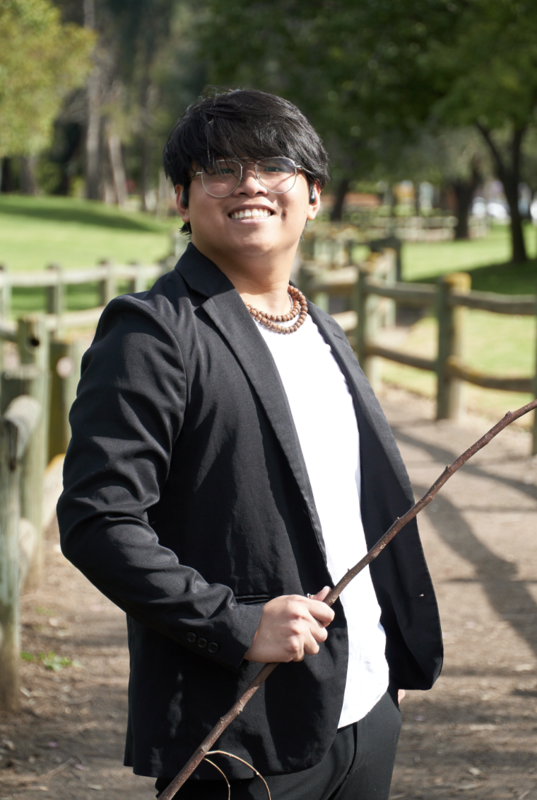
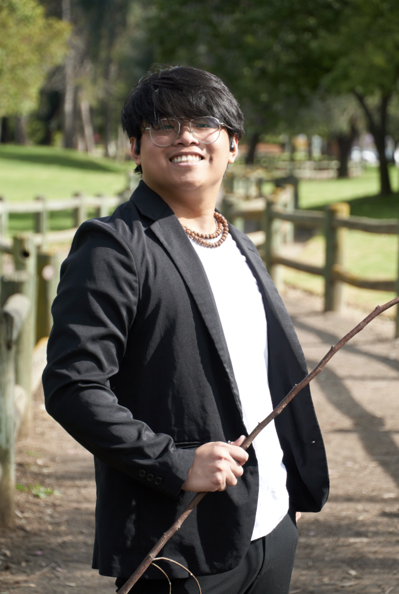

Computer Science Society is the oldest organization at Cal Poly Pomona. We are one of the largest clubs that host events regularly and advise our members on the next path to success. Our motto is “Connect passion to empathy“.
Connectivity, both socially and technically, is something in which our club focuses on as we prioritize providing our members with the opportunity to connect and build networks with professionals and peers. These connections allow them to reach new heights, and technology aids our club with connecting to the world, allowing members to enhance their knowledge and experience. We aim to unite our students and create an inclusive environment where they will strive the most.

Continuous technological advancement is a crucial driving force for society. During this tech storm, the improvement of resources and tools is always a goal in the industry. We aim to spread knowledge on this development through many of our activities. Whether they are technical or social development activities, we believe that the tools we provide will enhance one’s knowledge in both their technical and non-technical skills and ultimately guiding them to become a better person, one day at a time.

As the world is actively evolving, we need to prepare for these changes and adapt to them as fast as we can. The key for innovation lies in the hands of future generations pursuing a role in the tech industry and how keen they are in detecting, analyzing, and solving global problems. To prepare for a vastly improving and innovating industry, our club promotes life-long active learning to build robust and timeless skill sets. Therefore, we strive to emphasize how significant and inventive new tech solutions are to society.

Hello! I’m Kayla, a 4th year computer science major at Cal Poly Pomona, and I’ll be your CSS president for 2023-2024! I’ve helped with the Northrop Grumman Collaboration Project, PolySec Cyber Lab, HAPII Lab, and I am currently working at NASA’s Jet Propulsion Lab. My advice is to not hesitate to get involved and to take advantage of the opportunities and resources available through our university and clubs. I look forward to meeting you all and I hope you enjoy your time at CPP!
Yooo, I’m Phu Truong and I’m a 4th year at CPP! I immigrated over to America from some village in Vietnam. Growing up in Vietnam I didn’t have much access to technology but when I came over to America and gained access to video games and the internet, it was a done deal. As I grew up I wanted to learn more about computers and software since I thought it was so cool. Now I’m here at CPP learning CS. Nice to meet you!
Hello! I’m Christopher Lo, a 3rd year student at CPP. I’m currently most comfortable with backend related topics, but I’m hoping to learn AI-related things. Looking forward to learning and growing with everyone this semester!
Hi everyone, I’m Joey, Computer Science student minoring in both Data Science and Statistics. This past summer, I was an REU intern for USC at the Institute for Creative Technology, where my goal was to create a labeled repository for machine learning models that track human-to-human social engagement. I am also currently employed at CALSys Labs as a research assistant, where my primary responsibilities include searching and creating proprietary methods for breaking CAPTCHAS. These breakers will then be integrated into existing web crawlers to assist in dark web exploitation. On top of my recent endeavors, I was also the student chief engineer of ground communication systems for the Northrop Grumman Collaboration Project, where my team was to establish a centralized command and control center’s digital infrastructure to maintain a communication link between multiple unmanned vehicles.
Salutations! My name is Daniel Pasion and I am a third year undergraduate student at California Polytechnic State University: Pomona, California and I am currently pursuing my Bachelors of Science in Computer Science. Like many of you, I majored in Computer Science solely because of video games and I was in for a shock once I took my first Computer Science class. The rigor of a Computer Science degree is not something one should tackle on their own and being in a commuter school, it’s easy to feel very lost and alone. As the Events and Outreach Chair, I plan on creating a community at Cal Poly Pomona where all CS majors feel welcome and have the resources to achieve their career goals.
Hello, my name is Jonah Mokhtarzadeh, and I’m a senior in CS. I am interested the most in learning data science, information technology (IT), and game development. I plan on working on this website to update and provide exciting club events and other information for students who want to invest their time learning the vast computer science fields.

 



1 / 8
Semester: Fall 2023
Computer Science Society Project Initiative (CSSPI)
This series of events is to help students apply their useful skills that they can learn outside of classes to solve something interesting. Whether in education, the environment, or of their own problems. This project initiative represents learning by doing. An example is learning the latest frameworks and applying them to your full potential.
Web Design
Speaker Events
Recruiter Events
Workshops
click me
More...
Computer Science Society Project Initiative (CSSPI)
This series of events is to help students apply their useful skills that they can learn outside of classes to solve something interesting. Whether in education, the environment, or of their own problems. This project initiative represents learning by doing. An example is learning the latest frameworks and applying them to your full potential.
Web Design
Speaker Events
Recruiter Events
Workshops


Backend database for our club's mobile application
Our club's website before the redesign
A demo of the web application in use